| City | Province | Famous Attraction | Image |
|---|---|---|---|
| Manila | Metro Manila | Intramuros | 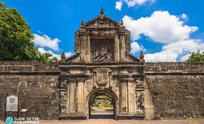 |
| Cebu | Cebu | Magellan's Cross | 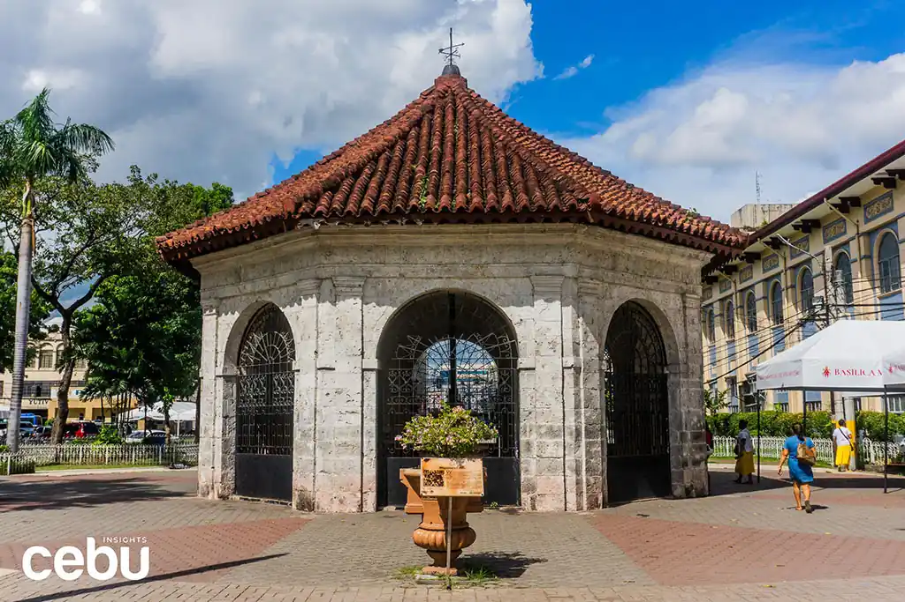 |
| Vigan | Ilocos Sur | Calle Crisologo | 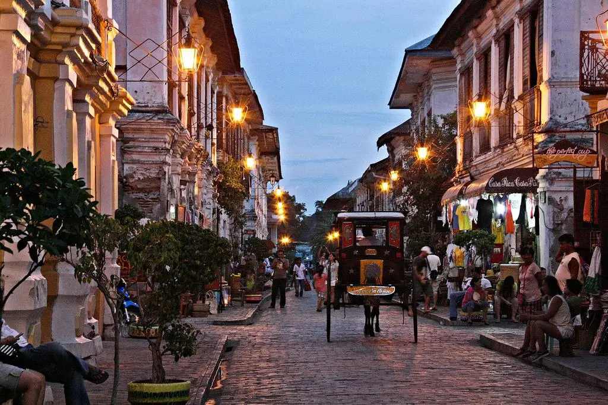 |
| Boracay | Aklan | White Beach | 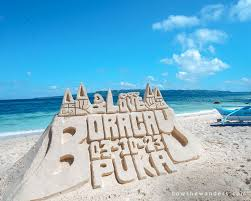 |
| Palawan | Palawan | Underground River | 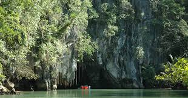 |
| Banaue | Ifugao | Banaue Rice Terraces | 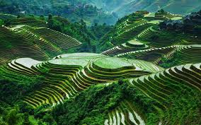 |
| Samar | Eastern Visayas | Sohoton Cave | 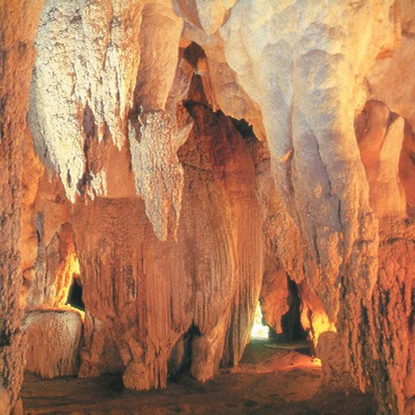 |
| Tagaytay | Cavite | Taal Volcano | 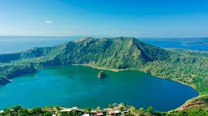 |
| Legazpi | Albay | Mayon Volcano | 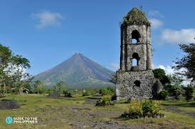 |
| Davao | Davao del Sur | Mount Apo | 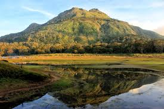 |
| Zamboanga | Zamboanga Peninsula | Paseo del Mar | 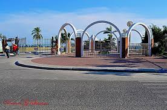 |